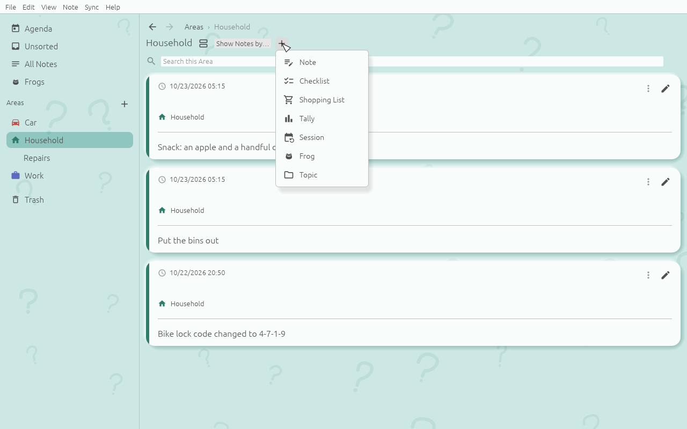
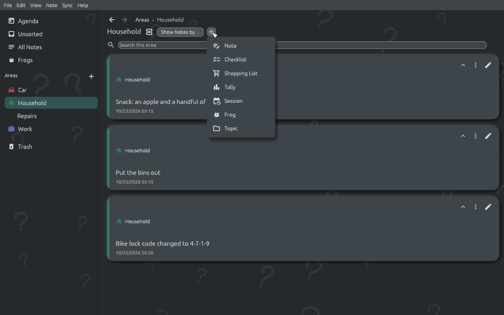
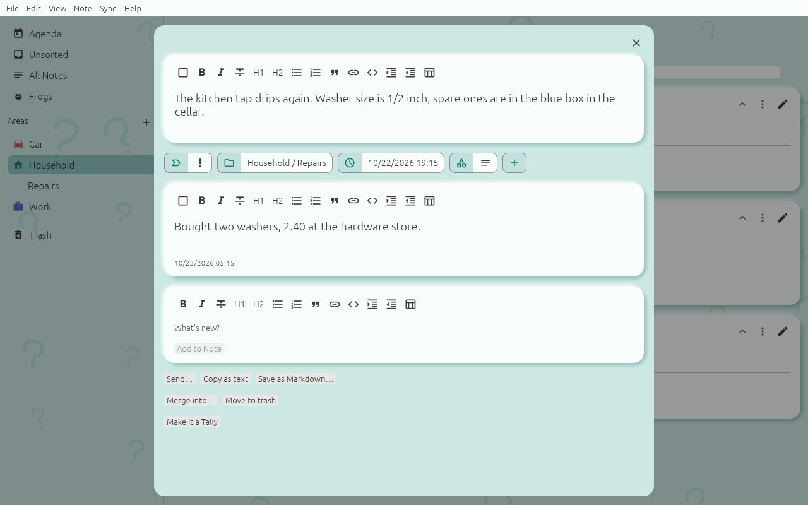
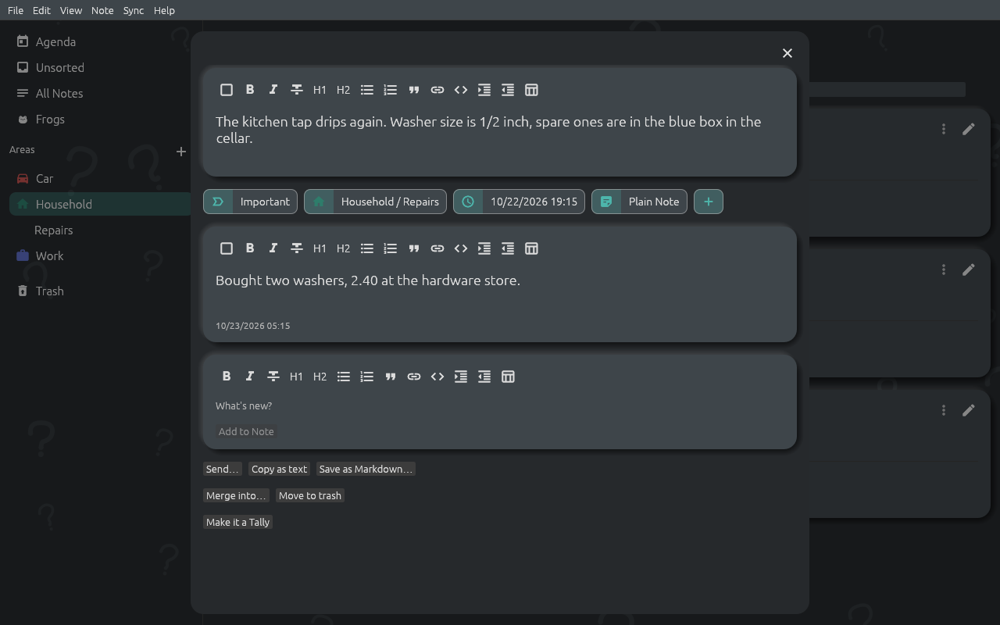
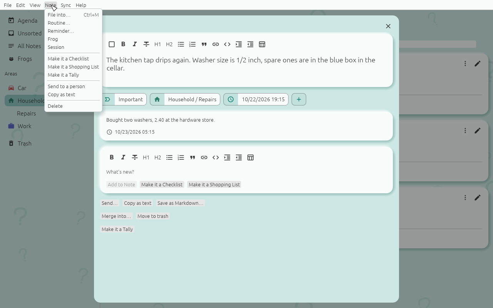
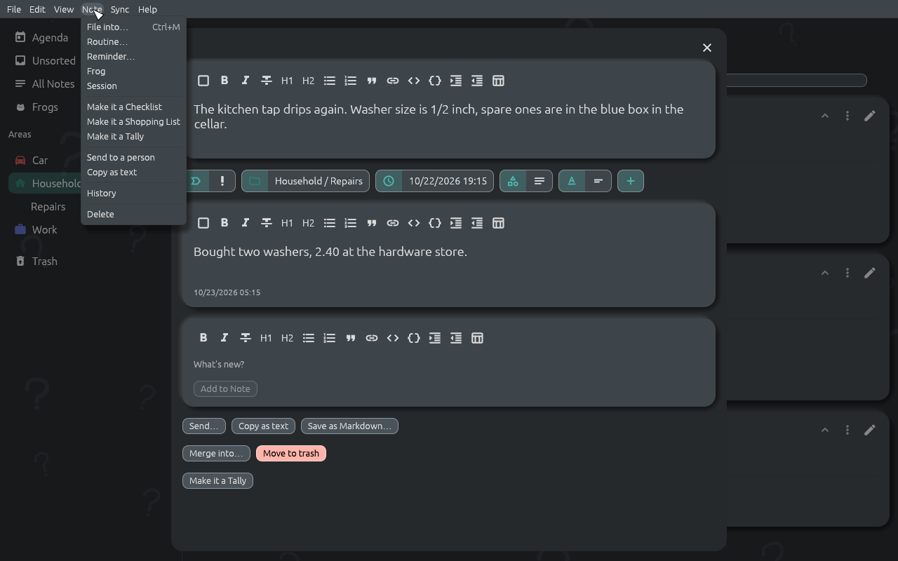
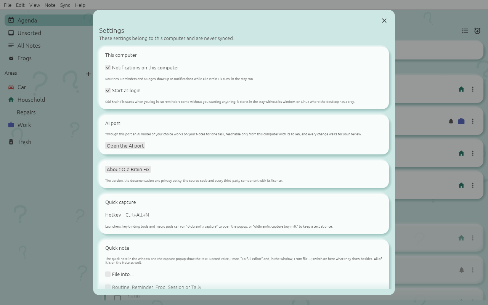
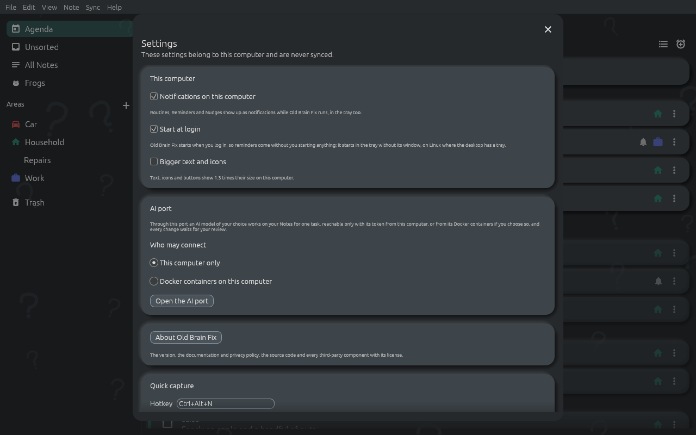

The desktop app runs on Linux, Windows and macOS and holds the same Notes, Areas and Routines as the phone once the two are paired. It is a window with a menu bar, the places on the left and the list beside them, a Note opening as a dialog over them, worked with the mouse and the keyboard, with a capture popup and a command line for capturing from anywhere. Settings belong to this computer and are never synced.
The app is installed with Homebrew, Scoop, a .deb, a Flatpak file, an AppImage, a disk image or a zip file; see Install. On Linux, outside the Flatpak, every start writes or refreshes the app's entry in the application menu and its icon.
The first start offers the same three choices as the phone: New to Old Brain Fix with the Starter Set, Add a Device of mine and Restore from a Backup (see Getting started). The Profile takes the name and picture of your login on the computer, or else the computer's name. The desktop asks neither for the speech model nor for alarm access.
The window has the menu bar on top and two columns below it; the border between them can be dragged.
The "+" of All Notes, an Area and a Topic opens a menu: Note opens the quick note, Checklist, Shopping List and Frog ask for a name, Tally and Session open their page, and in an Area Topic adds a Topic. What it makes is filed into the Area or Topic shown, from All Notes into none; Session, Frog and Topic are there for who may set them up. A new Checklist or Shopping List opens in the Note dialog, the cursor in its first Line or its field at the top (see Lists, Tallies, Sessions and Frogs). The "+" of the Agenda and of Unsorted opens the quick note at once. Nothing is made while the list shows another person's Notes only. Every list ends with room after its last card, so that card scrolls fully into view.


In a list of Notes, a click selects a card; its view button, at its top right beside ⋮ and the pencil, switches it between its compact and its detailed view (see "A Note's kind" in Lists, Tallies, Sessions and Frogs), kept on this computer until the list's switch is used again; a double-click or the pencil opens the Note in the Note dialog. A right-click on a card or its ⋮ opens Edit, File into…, the Checklist entries with Show on the Agenda, the Shopping List entries with Show on the Agenda and its three choices (see Lists, Tallies, Sessions and Frogs), Send to a person, Copy as text and Save as Markdown…. A card dragged onto an Area or Topic in the sidebar is filed there, an Unsorted one leaving Unsorted; Notes in the Trash are not dragged.
Ctrl-click (Cmd-click on macOS) adds a card to the selection or takes it away again, and Shift-click selects every card from the one clicked last to this one. Selected cards carry a check mark and a thicker outline. Dragging one of them onto an Area or Topic, File into… in its right-click menu, Note ▸ File into… and Ctrl+M file them all together; the dialog says how many go. A card outside the selection is dragged alone. Esc and showing another place drop the selection. In a Shared Area a Member's selection may hold Notes other people wrote, which only a Manager moves: they stay where they are, and a line at the top says that not every Note was filed; its click shows how many moved and how many stayed.
A click on a photo in the Note dialog shows it full screen. A right-click on a photo in the Note dialog or full screen opens Save image as…, which saves its file where you say, Copy image, which puts the picture on the clipboard, and Open in another program, which opens it in the computer's program for pictures. Saved and copied say nothing; when one of them fails, a line at the top of the window says so, and a click on it shows why and what to do.
The Agenda's bar holds All Routines and Reminders and New Routine or Reminder.
A Note opens as a dialog over the list and the sidebar, one at a time; the menu bar stays at hand above it. It holds the text with the format bar, under it the Note's settings as badges, then its Lines, photos and recordings, its Tally's setup and its Sections, Add to Note and the rest of what can be done to it. Its cross, Esc, Alt+Left, the mouse's back button and a click beside it close it, and what was typed is kept, a Section typed into Add to Note too.
Each badge shows a setting's icon and its value, as an icon or as short text, as on the phone (see Capture and sort): the Importance, Area and Topic, Captured, each Routine and Reminder, the kind of a Checklist, Shopping List or Tally, Show on the Agenda for a Checklist without a Routine and for a Shopping List, Show ticks while there is a box, and "+" with Routine, Reminder, Frog and Session for who may set them up. A click opens its small editor as a dialog over the Note; Area and Topic opens File into…, a Routine or Reminder its editor. The Routine editor, a Tally's pages, the New Tally page and the New Session page open as dialogs over what they were opened from. Captured's dialog shows Remove beside each captured detail but the time, and a click on the small grey line under a Section's text, such as "12:40 · Home · Dentist", opens the same dialog for that Section; Remove asks once, and the dialog stays open with what is left. In the detailed view of a card the Note and each Section show that line under their text, a Section's with its time alone when it was captured the same day as the part before it.
The text of a Section, an Amend or a Note merged in, is edited in place in a field of its own with the same format bar as the Note's text, by its author and in a Shared Area also by the Area's Managers, and saved as the dialog closes or the field is left; it keeps its place and its capture time, and once edited says under its capture line when and by whom, such as "Edited 3/2/2026 11:00 by Ann". A text that is only read, such as another person's Section or a Note's in the Trash, is selected with the mouse and copied with Ctrl+C (Cmd+C on macOS). Copy as text copies the Note and all its Sections, as they show.


A menu closes once an entry is picked, with the mouse, the keyboard or a screen reader. On macOS the menu bar is part of the window, as on Linux and Windows, and Settings… stays in its Edit menu.


The Settings, About and everything under Sync open as dialogs over the window; the list stays where it was beneath them. The cross at the top right, Esc or a click beside the dialog closes it. A dialog opened from another, such as About from the Settings and the licences from About, has an arrow at the top left that leads back to that one. While a dialog is open, a line that announces something shows at its top.
Where the phone goes back with a swipe, the desktop uses keys and the mouse's side buttons. Alt+Left and Alt+Right rest while the cursor is in a text field; the mouse buttons always work.
The app shows an icon in the tray: in the notification area on Windows, in the menu bar on macOS, and on Linux where the desktop has a tray: KDE, Xfce, Cinnamon, and GNOME with the AppIndicator extension. A click on the icon opens the window, on macOS its menu; the menu, on Windows and Linux under the right mouse button, holds Open Old Brain Fix, Capture a Note and Quit. Closing the window leaves the app running in the tray, with its notifications, its hotkey, the sync with paired Devices and the weekly Backup; Quit ends it.
Linux without a tray has no icon. There, closing the window ends the app, and with it the notifications and the hotkey, until it is started again.
Settings, "This computer", Start at login is on unless switched off. It writes an autostart entry on Linux (inside the Flatpak through the desktop's Background portal), a LaunchAgent on macOS and a Run entry for your user on Windows. The login start goes into the tray without a window; on Linux without a tray it opens the window.
The app runs once per user. A second start, from the menu or a command, hands its wish to the running app: its window opens, or its capture popup.


The hotkey, Ctrl+Alt+N unless changed, opens the popup "Capture a Note" over all other windows,
also while the app runs in the tray without its window. The tray's Capture a Note and the command
oldbrainfix capture open it too. It takes text, a voice recording and the clipboard,
offers To full editor and what Settings under "Quick note" switched on, as the
quick note in the window does, and never asks anything: Enter saves the Note
with a Nudge in 1 h, and Esc keeps what is typed the same way (see
Capture and sort).
oldbrainfix opens the window.oldbrainfix capture opens the capture popup.oldbrainfix capture buy milk keeps "buy milk" as an Unsorted Note with a Nudge in 1 h, without a window. After -- every word is text, also one that starts with "-".oldbrainfix capture - keeps what comes in on standard input.oldbrainfix import FILE imports a sync bundle and prints what came in.oldbrainfix open FILE shows a Sent Item in the window, to accept or decline; a Profile card file adds the person and opens their Profile.oldbrainfix --help prints the usage.A capture or an import goes through the running app, which plans the Nudge at once; when none runs, the command writes the Note itself, and the Nudge comes once the app runs. A capture that worked prints nothing. The exit code is 0 when it worked, 1 when the Note could not be kept or the bundle imported, and 2 for wrong arguments or nothing to capture. Launchers, key-binding tools and macro pads can run these commands, also where the desktop offers no hotkey.
.obfsync) dropped onto the window is imported; a Sent Item (.oldbrain) is shown to accept or decline; a Profile card file (.obfcard) adds the person and opens their Profile.The alarms of Routines and Reminders, the Nudge, the Changes Nudge and "Missed while Old Brain Fix was not running" come as the system's notifications, for as long as the app runs. The switch "Notifications on this computer" in Settings turns them off. A click on a notification opens the window: on Unsorted for the Nudge; for the Changes Nudge, a save dialog for each person waiting.
The app plays the alarm sound itself, and an escalated alarm turns the notification urgent; there is no full-screen alarm (see Routines, Reminders and the Agenda).
Transcripts need the speech model, chosen and downloaded under Settings, Speech model, or taken from a file of your own, as on the phone. Recordings without a Transcript, also those from the phone that were not transcribed there, follow once it is in place. Photo Texts need no download: the text recognition is part of the app. Both run on this computer, one recording or photo at a time, while the app runs (see Formatted text, Transcripts and Photo Texts).
Sync now in the Sync menu opens Sync. It shows this computer's code, as a QR code and as text with its PIN, for the phone to scan, for as long as it is open; a phone that is not paired yet is asked about first, Trust or Refuse. When a shared folder is chosen, Sync now also syncs through it at once. Pair a Device shows the same code and the field Pair code, where a code the phone shows is typed or pasted and joined with Sync with this code. Paired Devices on the same network then sync on their own for as long as the app runs, also in the tray; the shared folder syncs every half minute. See Sharing and sync for pairing, the shared folder, bundles and Conflicts.
Import… in the File menu opens the Import dialog: A folder… makes Notes of a folder of Markdown or text files, and Google Keep… of a Google Takeout export of Keep (see Import notes from another app).
Only the desktop has the AI port. Settings, Open the AI port lets an AI model of your choice work on your Notes for one task, reachable only from this computer with its token. Sync waits while the port is open and until the review. Done, review closes the port and lists every change with its before and after, to accept or reject as a whole (see The AI Task).